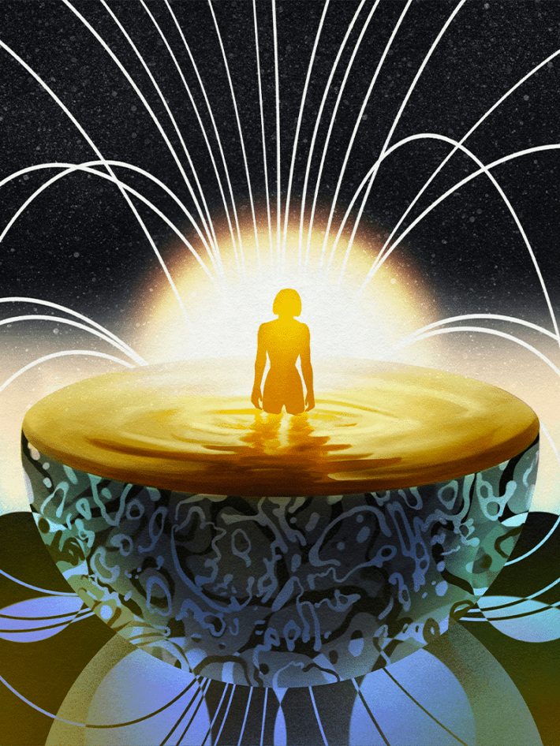

When we set out to make our Climates Issue, we planned to make it wild and expansive. Any way you could think to interpret the word climate, you might just find a story on it. But as the stories and the conversations circled, they inevitably coalesced around The Big One, the one with the weightiest center of gravity right now: planetary climates.
The one we’re on, of course, is careening at an accelerating velocity toward something radically different than it’s been for quite a long time. (Tens of millions of years.) We may think we know enough, have heard enough. But, on a deeper look, the mysteries blossom forth.
On a glacier on the side of Washington’s Mount Rainier, as the summer sun sets, animals called ice worms inch through the snow and ice to emerge by the billions. Scientists still don’t know why they come out only under the cover of night or how they survive in the glacier, as they don’t seem to be able to tolerate freezing temperatures. Paradise Glacier, their home, once held a vast system of ice caves, a favorite destination of tourists and hikers a century ago, even into the 1980s. Now the glacier is greatly reduced, of course—about 12 percent of its first-mapped size—and its ice caves vanished. But it is still full of intrigue. We just had to look closer. When researchers recently took a bit of its ice and melted it down, they found genetic traces from every domain of life and four different kingdoms. In glacial ice! We still don’t know what’s there, right here, in one of the best-studied glaciers in the lower 48, as science journalist Sofia Quaglia uncovers in this issue.

Illustration by Deena So Oteh
You might also not yet know about the olm. That’s probably because even second-generation olm scientists are still trying to figure it out. These sizable salamanders—which look quite a lot like elongated, eyeless axolotls—live in karst caves, a thousand feet below ground. If that didn’t make them hard enough to study, they are also incredibly sensitive to light and vibration and even to electromagnetic fields emitted by scientific equipment. Writer Gary Hartley takes us along on a reporting trip to a specialized cave lab in Slovenia where one husband-and-wife team is hatching an elaborate plan for a new AI approach to study these canaries in the deep-climate coal mine.
The issue gets wilder still. Astrophysicist Sean Raymond explains how erratic orbits of other planets might super-prime their climates for life; and decorated climate scientist and author Kate Marvel reveals what, after all, Poseidon has been trying to tell us. We also journey inside our cells to find out how heatwaves are changing our own DNA.
Yes, there may be plenty to be weary about in pondering the world’s various climates right now (for that, one writer teaches us about a helpful German word, used by Goethe: Weltschmerz, which translates as “world-pain”). But, hey, at least we’re not on planet HD 189733 b. There, the winds howl at 5,400 miles per hour driving a hard rain of molten silicates, essentially liquid glass. So for now, we can marvel at the wonders of the climates we have right here in front of us.